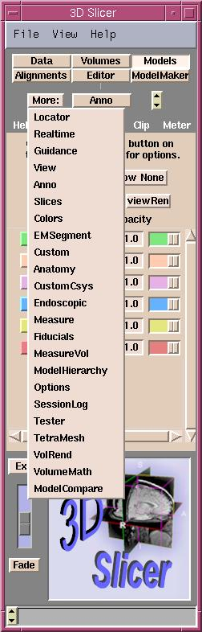
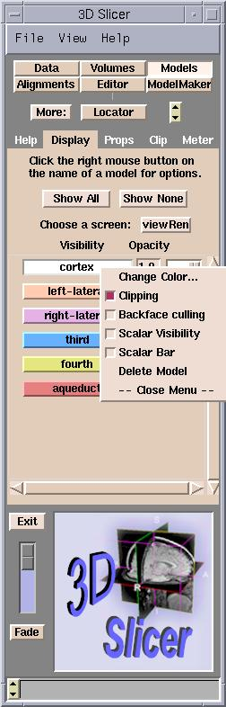
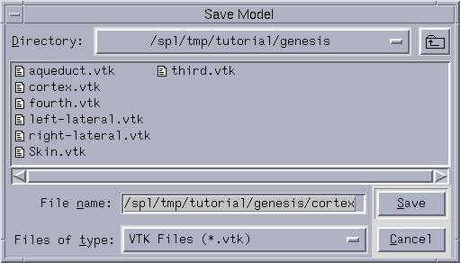

Tutorial

|
This tutorial will walk you through the process
of creating a 3D scene comprised of medical scans and surface models. You
can learn how to view volume of images and to save the scene for later use.
|
1. Quick Tour
2. Loading Volumes
a. With Headers
b. Without Headers
c. DICOM
3. Loading Models
4. Viewing Volumes
a. Slices
b. Color
c. Image Fusion
5. Viewing Models
a. Opacity
b. Color
c. Clipping
6. Saving Volumes
7. Saving Models
8. Saving the Scene
a. Save MRML
b. Save Images
c. Save Current Options
9. Conclusion
1. Quick Tour
The 3D Slicer is available for Unix and Microsoft Windows, and Linux Redhat
7.3 operating systems. To start the 3D Slicer on Unix, and Linux Redhat 7.3
type 'slicer' at a command prompt. On Windows, double click the 3D Slicer
icon on the desktop or start the 3D Slicer from the Programs menu.
After the 3D Slicer started, it will present two windows.
The Menu window is on the left and the Viewer window is on
the right. The Menu window provides menus for accessing the features
of the Slicer, while the Viewer window displays volumes and models.
The upper part of the Viewer window is the 3D viewer and the lower
part displays the corresponding 2D slices.
A brief explanation of the Menu window will make it easier to refer
to its parts later. At the top of the Menu window there is a pulldown
menu with File, View and Help submenus. Under the pulldown
menu is a series of buttons known as the Main menu. Pressing a button
on the Main menu will take you to the panel associated with
that Slicer feature. Along the top of each panel is a sequence of
tabs, with the leftmost being help on that feature.
The More button in the Menu window lists the modules, which
are available in the 3D Slicer.
| 
|
- Locator: to connect the 3D Slicer to a server that
feeds a realtime stream of coordinates of a tracked device called the locator.
- Realtime: enables the locator's real-time coordinates
to control the 3D Slicer.
- Guidence: positions two spherical targets (red
and yellow) in the 3D view window.
- View: to custom size the viewer window. The stereo
mode allows viewing the 3D window in 3D with red/blue glasses.
- Anno: to control the annotation displayed
in the 2D and 3D viewer.
- Slices: selects the slices to be displayed in the
3D viewer window.
- Colors: to create your own color palette.
- EMSegment: implementation of the "Expectation-Maximization-Segment"
algortihm.
- Custom: a template to use to create your own
TCL modules for the slicer.
- Anatomy: to save files for the SPL Anatomy Browser
out of a slicer scene.
- CustomCsys: for developers to add a Coordinate
System actor to their module.
- Endoscopic: to place and control a virtual endoscope
in the slicer's scene and present the view in a second window.
- Measure: provides measuring tools to calculate
Surface Area, Volume and Cross Sectional Area.
- Fiducials: to add fiducial points on models either
in the 2D or 3D viewer window.
- MeasureVol: to measure the volume of segmented
structure in a labelmap.
- ModelHierarchy: to display the hierarchy of models.
- Options: to reorganize the order of the modules and
suppress unnecessary modules.
- SessionLog: records information about segmentation
session for 3D Slicer development purposes.
- Tester: allows the developer to test the source
code of modules.
- TetraMesh: to read in a Tetrahedral Mesh and convert
it into a model.
- VolRend: to select volume rendering methods: Composite,
MIP (Maximum Intensity Projection) or Isosurface.
- Volumemath: to add and subtract volumes, and to
find a distance between two points in a volume.
- ModelCompare: currently available functions are:
showing point correspondances and showing models in 2D.
|
Back to TOC
2. Loading Volumes
The 3D Slicer can read medical image volumes of various types (G.E.
Signa and Genesis data as well as DICOM slices and non-header image data)
In case the Slicer does not recognize the header automatically, you may manually
enter the necessary information so that the volume can be read.

|
To read in a volume, start at the Data
panel and press the Add Volume button. This is the panel you
will now see in the Menu window. |
Back to TOC
2a. With Headers
- Press Add Volume in the Data panel. This
will take you to the Props tab of the Volumes panel.
- To find the first image file, hit Browse. In the
dialog box that pops up, select the first image of the volume that you would
like to load, and then hit Open. (The number of the last image in the volume
will automatically show up in the "Number of Last Image" spot.)
- Leave the Image Headers button on Auto.
- With the Image Data buttons, select whether your
images are grayscale or label maps (an output of a segmentation).
- The Name field is the name that your volume will
have within the 3D Slicer. You may change this to something descriptive, for
example "presurgical SPGR".
- You may enter a description in the optional Description
field.
- Finally, hit the Apply button to read in the volume. Your
data will now be displayed in the 2D portion of the Viewer window.
Back to TOC
2b. Without Headers
- To manually set the header information, follow the directions
above, except set the Image Headers button to Manual.
- When you hit Apply, you will be taken to the Header
section of the Properties.
- Change the default values as needed according to the values
of your volume, ie. the physical parameters of the pixels which make up your
volumes.
- Then hit Apply to read in the volume. Your
data will now be displayed in the 2D portion of the Viewer window.
|
|
- Image size: number of pixels of the image in the x and
y directions. (for square images they are the same)
- Pixel size: size of each pixel in the x and y directions.
(for square images they are the same)
- Slice thickness: the z dimension of the voxel.
- Scan order:
- LR = left to right
- IS = inferior to superior
- PA = posterior to anterior
- Scalar type: The data format of the pixel, generally
it is a Short (16bit integer).
- In big-endian architectures, the leftmost bytes (those with a
lower address) are most significant. In little-endian
architectures, the rightmost bytes are most significant.
- Little Endian: In little-endian architectures, the
rightmost bytes are most significant. In big-endian architectures (slicer
default) , the leftmost bytes (those with a lower address)
are most significant.
- Note: the "DTI data" , "Swap", and "No Swap"
tabs are placeholders for future use.
|
Back to TOC
2c. DICOM
- Press Add Volume in the Data panel. This
will take you to the Props tab of the Volumes panel.

- In the Properties pull down menu select Dicom.
- Press Select DICOM Volume button.
- A dialog box appears. Select the start directory for searching
for the volumes and press OK. After pressing OK, the whole directory
structure will be traversed and every files will be checked whether they
are DICOM files or not. Important information, such as the name and ID of
the patient, the study UID (unique identifier), and the series UID will be
extracted from each DICOM file. Note if you have a large number
of files this is a slow process.

- After the search, a new dialog box appears. Here you can
select a patient, a study of this patient, a series of this study, and the
files of this series. By default, all files of the first series of the first
study of the first patient will be selected, and an interface similar to
the following will appear.

- After pressing OK, the header data of the first
file will be extracted. Additional files may be selected. Pressing the Extract
Header button will show their header info. You can check and modify the
extracted values by pressing the Header button.
- With the Image Data buttons in the Basic
section, select whether your images are grayscale or label maps (an output
of a segmentation).
- The Name field is the name that your volume will
have within the Slicer. You may change this to something descriptive, for
example "presurgical SPGR".
- You may enter a description in the optional Description
field.
- Now hit the apply to set your Name and
Description fields.
- Finally, hit the Apply button to read in the volume. Your
data will now be displayed in the 2D portion of the Viewer window.
DICOM is a complicated standard. The 3D Slicer is not capable of reading
all flavors of it.
It is assumed that the slices of the volume are stored in seperate files,
and they are not compressed, and that the header data is correct . Contains
the correct values of the study and the series UIDs.
For determining the correct slice order, the Slicer uses the following method.
First, it tries to find the Image Number (0x0020,0x0013) data element. When
that is not present, it tries the Slice Location (0x0020,0x1041) data element.
When none of them are available, the files will be ordered as they were found,
possibly not in correct order.
There is a restriction of the Slicer that the slice thickness and spacing
must be the same for every slice.
Back to TOC
3. Loading Models
Technical Note: The data format for the models that the 3D Slicer reads
in are vtkPolyData.
- Press Add Model in the Data panel. This will
take you to the Basic Props tab of the Models panel.
- To find the model file, hit Browse. Select the model
that you would like to load in the dialog box that pops up, and hit Open.
- The Name field is the name that your model will
have within the Slicer. You may change this to something descriptive, like
"vessels".
- In the Color pull down menu, you can select your
model's color as it will appear in the 3D Viewer.
- Finally, hit the Apply button to read in the model.
Back to TOC
4. Viewing Volumes
Now that you've loaded in volumes and models you may want to optimize
how they are viewed.
To adjust the Window/Level and Threshold of a volume,
click Volumes on the Main menu. Then go to the Volumes
panel and then select the Display tab. Choose a volume from the Active
Volume pulldown menu at the top of the tab and move the sliders or hit
the Auto button to adjust the display properties of the volume.

|
By adjusting the Window/Level
of the volume you may optimize displaying the region of interest of the gray
scale images. Adjust the Level value until the dark areas become barely
visible. Then adjust the Window value that the bright areas are not
saturated into white. You may need to go back and forth to readjust until
you have optimally displayed your data. |
Back to TOC
4a. Slices
- The Slicer has multiple configurations to present image volumes. By
default the normal view is selected and in it, the viewer window is divided
into two sections. In the lower quarter of the viewer window, a 2D multi-planer
reformatted version of the volume is shown. The upper portion of the view
window shows the 3D formatted version. The V button selects which
image of the corresponding 2D window is added to the 3D view.
- Both grayscale and label map images can be selected into each of the
three (red, yellow, and green) 2D window. For example the 3D Slicer will automatically
put the Axial grayscale images into the first (red) 2D window as the background
layer.
- The slider selects which slice of the volume is displayed in
the corresponding 2D window. The numerical indicator shows the slice number.
The V button controls visibility of the slice in the 3D viewer.
- The Or, Lb, Fg, Bg, buttons operate on all
three 2D Window.
- With the Or button you can change the assignment between the
scan order and the 2D window order. For example the Axial view can be put
into the first 2D window, the Coronal into the 2nd and the Saggital into the
third window. Or the Coronal view into the first and the other two into the
other two window. Or each can be set individually, to suit your need.
- The Bg button selects which volume is put into the backgroung
layer.
- The Fg button selects volume for the foreground layer, which
superimposed over the background layer.
- The Lb button selects labelmap images for the labelmap layer,
to display results of a segmentation. Images loaded into the labelmap layer
will be displayed as outlines around the structures that were segmented. The
3D Slicer itself can be used to create labelmaps, and also make models from
them. See the User's Guide for more information.
- The buttons (red, yellow, green) to the right of the above mentioned
buttons, operate similarly but only on the window right below them.
Back to TOC
4b. Color
The Palette feature (on the Display tab of the Volumes
panel) allows selection of a color scheme to colorize your gray scale
volume, which might help you to see different region of interests better.
Available schemes are: Gray, Iron, Rainbow, Ocean, Desert, Inverse Gray or
Label.
Back to TOC
4c. Image Fusion
The vertical slider in the lower left of the Menu Window, just under the
Exit button, is used to fade from the images displayed in the background (Bg)
layer to the images displayed in the foreground (Fg) layer. In the example
below, the images in the background are grayscale images and the images in
the foreground are labelmap or segmented images.
Back to TOC
5. Viewing Models
The Display tab of the Models panel shows a list of all models
that are currently loaded into the Slicer.
- The Show All and Show None buttons make all
models appear and disappear, respectively, in the 3D Viewer.
- Clicking the name of a model turns its visibility on and
off, while clicking with the right mouse button pops up a menu of display
options.
Back to TOC
5a. Opacity
This controls how transparent the model is. By default, slicer creates
models that are completely opaque (opacity value 1) setting the opacity to
0 makes the model completely transparent.
Adjust the opacity/transparency to vary in either of two ways:
- adjusting the opacity slider to the right of the model's
name in the model list (in the Display tab of the Models panel)
- going to the Props tab of the Models panel,
setting the Active Model, and using the Opacity slider there.
Back to TOC
5b. Color
The simplest way to change the color of a model is to right-click on its
name in the model list (in the Display tab of the Models panel)
and select Change Color. You may also go to the Props tab. Refer
to images in the last section (5a.)
Back to TOC
5c. Clipping
- To cut away sections of the model turn on Clipping. The location
where the clipping occures is controlled by the slice slider. This means that
on one side of the slice, the model will be removed, making the image of
the slice appear and on the other side of the slice, the model still remains
visible.
- To turn Clipping on for a model, right-click on the model's name in
the list (in the Display tab of the Models panel) and choose
Clipping.
- To adjust the way the slices clip the models, go to the Clip
tab of the Models panel.
- The Clip tab controls on which side of a slice the model is clipped,
as well as whether an individual slice clips models or not.
Note that the red, yellow, and green buttons on this tab correspond to
the red, yellow, and green slices in the Viewer. The cutaway order is listed
in the following table:
| red |
(axial) slices |
+ is Superior |
- is Inferior |
| yellow |
(sagittal) slices |
+ is Right |
- is Left |
| green |
(coronal) slices |
+ is Posterior |
- is Anterior |
In the sample given bellow the right-superior-posterior part of the cortical
surface has been clipped.


|
Back to TOC
6. Saving Volumes
- After creating new labelmap data with the Slicer edit features, it
may be necessary to save the new volume of data. Click the Editorbutton
in the Main Menu. This will bring you to the Volumes tab, the one
inside the Editor.
- Click the Save button.
- Select the labelmap to be saved from the menu and click Save.
- Then a Save Volume dialog box pops up. Choose the path and hit
Save.
Back to TOC
7. Saving Models
- Click the ModelMaker button in the Main Menu.
- Click the Save tab.
- Select the model to be saved from the menu and click Save.
- Then a Save Model dialog box pops up. Choose the path and hit
Save. The model will be saved as a .vtk file which identifies the file as
a model.

|

|
Back to TOC
8. Saving the Scene
There is more than one way to preserve the scene you are looking at.
- Save Scene as a XML file, the XML file lists the
elements of the scene and their attributes.
- Save 3D View, save a picture of the 3D View or one
of the slices.
- Save Current Options, save user preferences, like
background color or view presets into special Options.xml file.
Back to TOC
8a. Save XML
- To save a description of the current scene, click
on File in the pulldown menu and click on Save Scene. By default,
slicer will save the description of the scene in a file called data.xml. To
choose a filename other than the default data.xml filename, choose Save
Scene As and give a your own descriptive filename for the scene.
- Save Scene With Options will include Options
in the scene description. These are View Presets, background color, and other
preferences you have set in this Slicer session.
- To open a scene later, click on File, then
Open. Find the scene .xml file, double click it, and wait for the volumes
and models to be loaded.
|
|
Saving Volumes and Models
Note that you should save any new volumes and models you've created first,
before saving the scene.
What is the Deal Here?
When you save a XML file, you are saving the "scene." This means that you
are saving the pathnames to the volumes and models, not the volumes and models
themselves. This is great because it allows you to open them all again, just
by opening the scene file!
|

|
Back to TOC
8b. Save Images
- Under the File pulldown menu in the Menu
window, use the Save 3D View As and Save Active Slice As options
to save images in the TIFF file format.
- Then a Save 3D View or Save Slice dialog box pops up,
which let you choose the path to save your file, and hit Save.
Note that the Active Slice is the one that you clicked on last.
Back to TOC
8c. Save Current Options
- This is how to customize the Slicer to your preferences.
Click on File in the pulldown menu, and then on Save Current Options.
This will save an Options.xml file in the current directory. Whenever you
run the Slicer from that directory, it will find the Options.xml and set things
up the way the options were saved.
Settings that can be controlled with user options are:
- The View Presets that can be set under the 3D Slicer
graphic in the Menu Window.
- The settings from the Modules tab on the Options
panel.
- The Background Color set using View on the pulldown
menu. (Note: This can be set differently for each of your View Presets.)
When you save the Scene with Options, these options are
also added into the scene XML file.
Back to TOC
9. Conclusion
This tutorial was a quick walk through of the use of the 3D Slicer. Segmentation
of medical images, creating 3D models of segmented data with the 3D Slicer
is taught in the 3D Slicer's User Guide.
Back to top